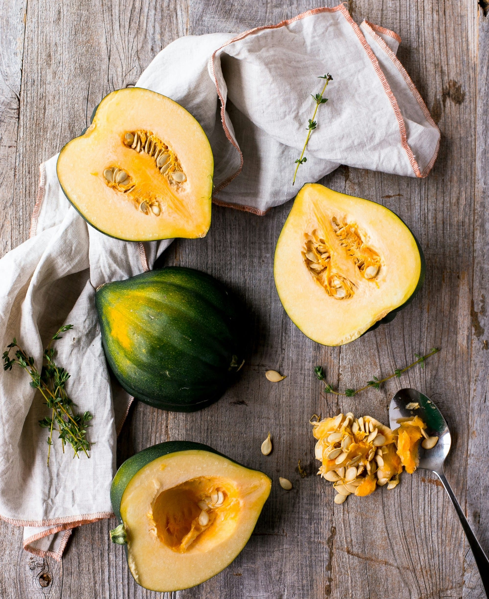
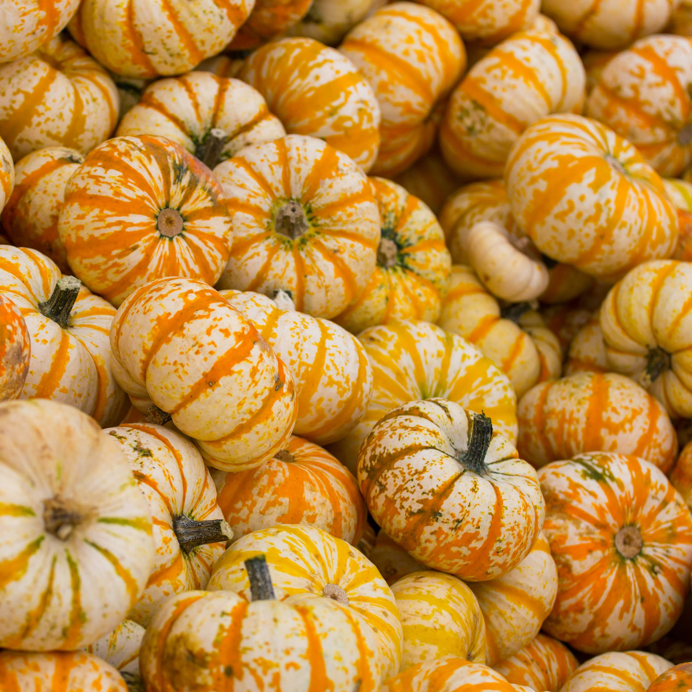
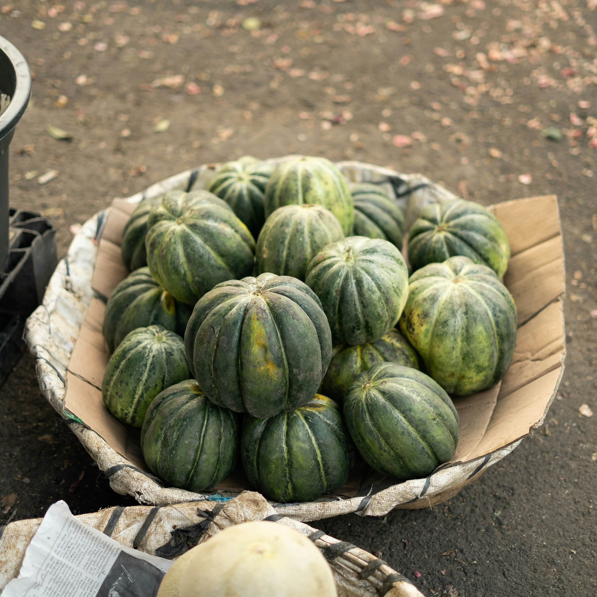

Why Acorn Squash Deserves a Spot on Your Table

Acorn Squash Nutrition: A Healthy, Wholesome, and Versatile Superfood
This fiber-rich vegetable is packed with vitamins A and C, potassium, and antioxidants, making it both healthy and delicious. Acorn squash is naturally low in calories and gluten-free, making it a great choice for a plant-based diet or a low-carb side dish. Whether you roast, bake, or mash it, acorn squash delivers immune-boosting nutrients and a naturally sweet taste that complements both savory and sweet dishes.

Endless Ways to Cook Acorn Squash
The best acorn squash recipes range from savory stuffed acorn squash with quinoa and vegetables to sweet roasted acorn squash with maple syrup and cinnamon. You can purée it into a silky smooth soup, mash it for a healthy side dish, or even add it to fall salads and grain bowls. Acorn squash is an incredibly versatile ingredient that works well in oven-roasted, air-fried, or slow-cooked meals.
Simple to Make, Hard to Resist
Cooking baked acorn squash is easy! Just cut, scoop, season, and roast—and in under an hour, you’ll have a flavorful, tender squash with minimal effort. Try roasting acorn squash with butter and brown sugar, brushing it with olive oil and garlic, or drizzling it with honey and cinnamon for a naturally caramelized, rich taste. Whether you prefer sweet or savory acorn squash, this easy fall recipe is always a crowd-pleaser.

Enjoy the Best of Fall with Acorn Squash
Nothing captures the warm, comforting flavors of autumn like the aroma of oven-roasted acorn squash. This easy-to-make winter squash is the perfect side dish for Thanksgiving, holiday dinners, or everyday meals. Whether you’re a home cook or just starting out, acorn squash recipes are your go-to for seasonal cooking, bringing flavor, nutrition, and comfort to every bite.